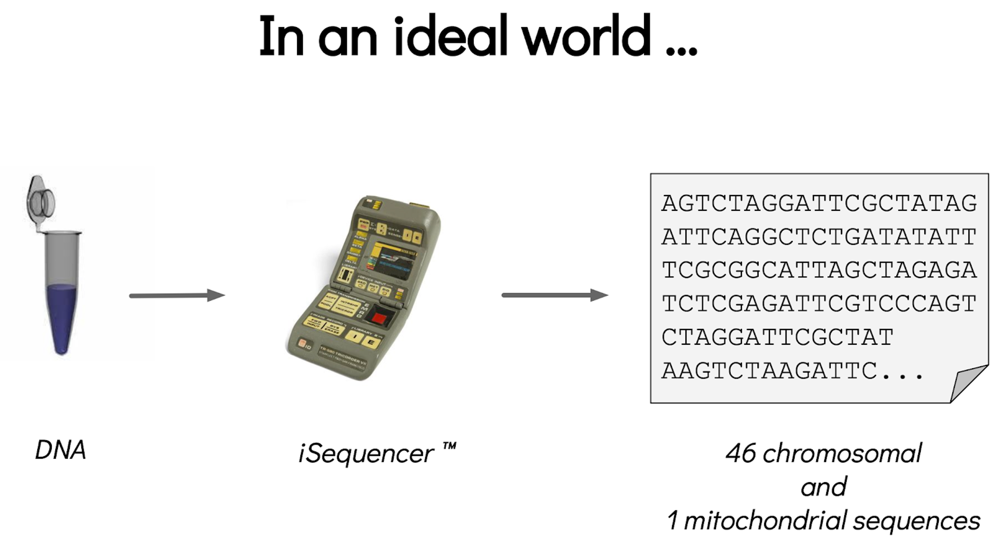
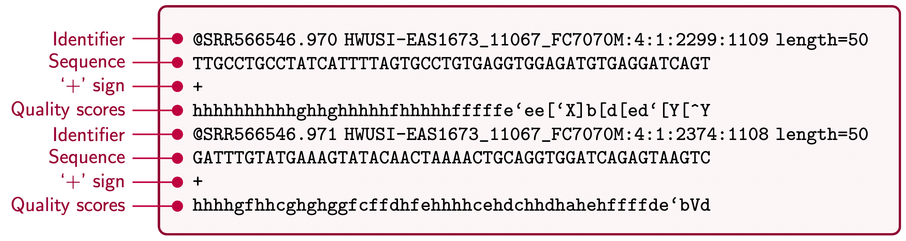

An introduction to get started in genome assembly and annotation
Contributors
| Author(s) |
|
| Editor(s) |
|
Questions
Definitions of bioinformatics terms for assembly and annotation
What are the guidelines before starting a Genome Assembly and Annotation project?
What file formats are used for assembly and annotation?
The truth about bioinformatics
.image-100[ ]
Let’s start with some important definitions
.image-40[ ]
.left[ Contig: a contiguous sequence in an assembly. A contig does not contain long stretches of unknown sequences (aka assembly gaps).
Scaffold: a sequence consists of one or multiple contigs connected by assembly gaps of typically inexact sizes. A scaffold is also called a supercontig, though this terminology is rarely used nowadays.
Assembly: a set of contigs or scaffolds. ]
.image-60[
 ]
]
.left[ Haplotig: a contig that comes from the same haplotype. In an unphased assembly, a contig may join alleles from different parental haplotypes in a diploid or polyploid genome.
Primary assembly: a complete assembly with long stretches of phased blocks.
Alternate assembly: an incomplete assembly consisting of haplotigs in heterozygous regions. An alternate assembly always accompanies a primary assembly. It is not useful by itself as it is fragmented and incomplete.
Haplotype-resolved assembly: sets of complete assemblies consisting of haplotigs, representing an entire diploid/polyploid genome. ]
.image-60[ ]
.left[ Telomere to telomere: An assembly where each chromosome is fully phased and assembled without gaps.
Linkage group: a set of contigs or scaffolds ordered and oriented using a collection of genes that are inferred to be located together on a single chromosome because of the pattern of their inheritance. ]
.image-20[ ]
.left[ Coverage in terms of redundancy (A): number of reads that align to, or “cover,” a known reference. It describes how often, in average, a reference sequence is covered by bases from the reads.
Coverage in terms of the percentage coverage of a reference by reads (B): E.g. if 90% of a reference is covered by reads (and 10% not) it is a 90% coverage.
Sequencing depth (C): total number of usable reads from the sequencing machine. ]
.image-80[ ]
Assembly and annotation in a ideal world
.image-100[  ]
Key concepts for assembly and annotation
.image-100[ ]
Steps before starting a genome project
.left[
-
Step 1: Build a broad community of collaborators for the project, if possible
-
Step 2: Gather information about the target genome
-
Step 3: Select the best possible DNA source and an optimal extraction procedure
-
Step 5: Choose an appropriate sequencing technology
-
Step 6: Check the computational resources requirements and availability ]
Build a wide community for the project (if it’s possible)
.left[ The aim of a genome project is to sequence the entire target genome for a wide range of genomics applications. ]
.left[ Analyses, reanalyses and integration of genomic and other phenotype information are required: ]
- Facilities: Wet lab, sequencing, bioinformatics,…
- Personnel: Highly skilled
- Software: Knowledge intensive
.left[ warning The cost of data storage, maintenance, transfer, and analysis are likely to be significant and will represent an increasing proportion of overall sequencing costs in the future. ]
Genome information: Genome size
.pull-left[ How to collect informations?
- Experimentally : Flow cytometry
- Databases:
- Fungi: http://www.zbi.ee/fungalgenomesize
- Animals: http://www.genomesize.com
- Plants: http://data.kew.org/cvalues
- Bibliography ]
.pull-right[
.image-100[
 ]]
]]
.footnote[https://commons.wikimedia.org/w/index.php?curid=19537795]
Genome information: GC content
.pull-left[ Why?
.left[ Sequencing is not random! GC and AT rich regions are under-represented. ]
How to solve?
- Chemistry quirks
- Increase the sequencing depth
- Technologies combination (long and short reads) ]
.pull-right[
.image-100[
 ]]
]]
.footnote[Chaisson et al. Genetic variation and the de novo assembly of human genomes. Nat Rev Genet 16, 627–640 (2015).]
Genome information: Ploidy level
.pull-right[
.image-55[
 ]]
]]
.pull-left[
Ploidy (N):
Number of sets of chromosomes in a cell
| Organism | Ploidy |
|---|---|
| Bacteria | 1N |
| Human, mouse, rat | 2N |
| Amphibians (Xenopus) | 2N to 12N |
| Plants (wheat) | 6N |
| Autopolyploid | . |
| Hybrids | . |
]
Higher ploidy -> harder to assemble => Increase of sequencing depth
.footnote[Daniel Hartl. Essential Genetics: A Genomics Perspective. Jones & Bartlett Learning. p. 177. ISBN 978-0-7637-7364-9. (2011).]
Genome information: Heterozygosity level
.pull-left[ .left[ Heterozygous: Locus-specific, diploid (2N) organism has two different alleles of a particular gene at the same locus ]]
.pull-right[
.image-100[
 ]]
]]
.left[ Heterozygosity is a metric used to indicate the probability that an individual is heterozygous for a particular allele ]
Higher heterozygosity -> harder to assemble => Increase of sequencing depth
.footnote[https://www.genome.gov/genetics-glossary/heterozygous]
Genome information: Heterozygosity level
.image-125[
 ]
]
.footnote[Heng Li’s blog: lh3.github.io/2021/04/17/concepts-in-phased-assemblies]
Genome information: Complexity aka repeats elements
.left[ It is impossible to resolve repeats of length L unless you have reads longer than L ]
Most common source of assembly errors:
.pull-left[
.image-65[
 ]]
]]
.pull-right[
.image-65[
 ]]
]]
Genome information: Others
- Karyotype: chromosome number
- Sex chromosome system: None, XY, ZW, UV,…
- Purity: possible presence of contaminants and/or symbionts?
- Is there any other useful data (NCBI, SRA, ENA, etc) that could improve my assembly?
Genome information: Tips
.pull-left[
- Flow cytometry :
- Genome size
- Ploidy level
- k-mer frequency from Illumina reads :
- Genome size
- Ploidy level
- GC content
- Heterozygosity
- Repeats composition ]
The best possible DNA
.left[ Select the best possible DNA source and extraction method. The extraction of high-quality DNA is the most important aspect of a successful genome project
The lack of a good starting material will limit the choice of sequencing technology and affect the quality of data obtained ]
The best possible DNA: Chemical purity of DNA
.left[ Sample-related contaminants:
- Polysaccharides
- Proteoglycans
- Proteins
- Secondary metabolites
- Polyphenols
- Humic acids
- Pigments
- Etc,…
All these contaminants can affect the efficiency of library preparation, regardless of the technology, and this is especially true for PCR-free libraries (PacBio and ONT) ]
The best possible DNA: Quantity of DNA
.left[ Different technologies require different amount of DNA:
- Illumina and 10x > 3 ng
- BioNano > 200 ng
- ONT > 1 μg
- Hi-C > 5 μg
- PacBio > 15 μg ]
The best possible DNA: Structural integrity of DNA
.left[ High Molecular Weight (HMW) for Nanopore/PacBio (obtained mainly from fresh material) ]
The best possible DNA: Tips
.left[
- Many DNA extraction protocol are available for a wide range of species/taxa (VGP, Darwin Tree of Life, Nanopore, PacBio, etc)
- Keep DNA samples from the same individual in case of library preparation or sequencing failure, need more coverage, new sequencing technology, etc
- Use a single individual and sequence a haploid, a highly inbred diploid organism, or an isogenic individual ]
Appropriate sequencing technology
.left[ This mainly depends on the quantity and quality of DNA as well as the cost of the experiment but many parameters need to be considered before performing an NGS experiment:
- Short versus long reads or both
- Read length
- Read quality/error rate
- Genome read coverage/depth
- Library preparation
- Downstream applications ]
Appropriate sequencing technology: Assembly
.left[
- Illumina or MGI: short reads (up to 2x250bp) with high quality reads. Sequencing bias with AT/GC rich regions
- IonTorrent: short reads (up to 500bp) with medium quality reads
- Nanopore: long reads (average ~15kbp) with low quality reads. Errors are not randomly distributed!
- PacBio:
- CLR: long reads (average ~20kbp) with low quality reads
- HiFi: long reads (average ~15kbp) with high quality reads ]
Appropriate sequencing technology: Scaffolding
.left[
- Hi-C: restriction enzyme fragmentation (single, multiples sites or DNAse). Need huge amount of coverage.
- Phase Genomics
- Dovetail Genomics
- Arima Genomics
- Optical mapping: technique to physically locate specific enzymes restriction sites or sequence motifs to produce DNA sequence fingerprints.
- BioNano
- BGI
- Mate pair (deprecated)
- BAC/YAC/Fosmids (deprecated) ]
Appropriate sequencing technology
.image-100[
 ]
]
.footnote[Stark, R., Grzelak, M. & Hadfield, J. RNA sequencing: the teenage years. Nat Rev Genetics 20, 631–656 (2019).]
Appropriate sequencing technology: Short vs long reads
.pull-left[ Short reads platforms: Highest sequencing depth but shorter reads ]
.pull-rigth[ .image-40[ ]]
.pull-left[ Long reads platforms: Longer reads but less sequencing depth ]
.pull-rigth[ .image-40[ ]]
.footnote[Kanzi, A. M. et al. Next Generation Sequencing and Bioinformatics Analysis of Family Genetic Inheritance. Frontiers Genetics 11, 544162 (2020).]
Appropriate sequencing technology: Short vs long reads
.pull-left[ Reads accuracy differs depending on the sequencing technology:
- Illumina and PacBio HiFi: more accurate
- ONT and PacBio CLR: less accurate (but longer) ]
.pull-rigth[
.image-40[
 ]]
]]
Appropriate sequencing technology: Coverage versus depth
.left[ Coverage in terms of redundancy
Coverage in terms of the percentage coverage of a reference by reads
Intuitively, increase sequencing depth should increase both types of coverage. ]
.image-40[
]
.footnote[Chaisson et al. Genetic variation and the de novo assembly of human genomes. Nat Rev Genet 16, 627–640 (2015).]
Computational resources and requirements
.left[ To be successful, you must have sufficient computing resources (CPUS, RAM, walltime and storage).
- The resources needed are different for each step:
- Assembly
- Annotation
- Other analysis tools
- For genome assembly:
- Running times and RAM increase with data type and amount
- More data for large genomes, increase runtime/RAM/Storage
- Most of tools run on a single node: they are parallelized but not distributed
- For genome annotation:
- Mapping/alignment of external data (RNA-seq, proteins) can be parallelized and distributed
- Annotation process can be parallelized and distributed ]
Typical sequencing strategies: Bacterial genomes
.left[
- PacBio CLR or Oxford Nanopore reads at 40-50x coverage, self-correction and/or hybrid correction (using Illumina data)
- Illumina 2x250bp paired-end reads from MiSeq ]
Typical sequencing strategies: Larger genomes
.left[
- PacBio CLR or Oxford Nanopore reads at 100x coverage, hybrid correction using Illumina data and scaffolding using Hi-C
- PacBio HiFi reads at 30x coverage and scaffolding using Hi-C
- PacBio HiFi reads at 30x coverage, 120x Oxford Nanopore ultra long reads ]
Bioinformatics data formats
.left[ FASTA: a text-based format for representing either nucleotide sequences or amino acid (protein) sequences, in which nucleotides or amino acids are represented using single-letter codes. ]
.image-100[ ] Image licensed CC-BY 4.0 Hosseini et al. 2016
.footnote[Hosseini, M., Pratas, D. & Pinho, A. J. A Survey on Data Compression Methods for Biological Sequences. Information 7, 56 (2016).]
Bioinformatics data formats
.left[ FASTQ: a text-based format for storing both a biological sequence (usually nucleotide sequence) and its corresponding quality scores (Phred). Both the sequence letter and quality score are each encoded with a single ASCII character for brevity. It’s the standard sequencing output for Illumina and MGI sequencers. ]
.image-100[  ] Image licensed CC-BY 4.0 Hosseini et al. 2016
.footnote[Hosseini, M., Pratas, D. & Pinho, A. J. A Survey on Data Compression Methods for Biological Sequences. Information 7, 56 (2016).]
Bioinformatics data formats
.left[ FAST5: the standard sequencing output for Oxford Nanopore sequencers. It is based on the hierarchical data format HDF5 format which enables storage of large and complex data. In contrast to fasta and fastq files a FAST5 file is binary and can not be opened with a normal text editor. Data stored in nanopore FAST5 files can contain the sequence of a read in fastq format (after basecalling), the raw signal of the pore as well as several log files and other information ]
.image-100[
 ]
]
Bioinformatics data formats
SAM (Sequence Alignment Map): a text-based format originally for storing biological sequences aligned to a reference sequence developed by Heng Li and Bob Handsaker et al.
BAM (Binary Alignment Map): the comprehensive raw data of genome sequencing; it consists of the lossless, compressed binary representation of the SAM format. It’s the standard sequencing output for PacBio sequencers.
CRAM (Compressed Reference-oriented Alignment Map): a compressed columnar file format for storing biological sequences aligned to a reference sequence.
.pull-left[ .image[ ]]
.pull-right[ Image licensed CC-BY 4.0 Hosseini et al. 2016 ]
.footnote[Hosseini, M., Pratas, D. & Pinho, A. J. A Survey on Data Compression Methods for Biological Sequences. Information 7, 56 (2016).]
Key Points
- We learned the definitions of bioinformatics terms used in genomes assembly and annotation
- We have seen the bioinformatics file formats used for these analyses
- We learned the importance of preparing the project to ensure its success
- We learned the importance of surrounding ourselves with all the people who have knowledge of the different parts of the project (wet lab, sequencing, bioinformatics,...)
Thank you!
This material is the result of a collaborative work. Thanks to the Galaxy Training Network and all the contributors! Tutorial Content is licensed under
Creative Commons Attribution 4.0 International License.
Tutorial Content is licensed under
Creative Commons Attribution 4.0 International License.
References
- Hosseini, M., D. Pratas, and A. Pinho, 2016 A Survey on Data Compression Methods for Biological Sequences. Information 7: 56. 10.3390/info7040056
Funding
These individuals or organisations provided funding support for the development of this resource